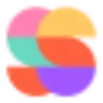

МолекулаАгрегаторы нейросетей
Молекула объединяет модели для текстов, изображений, видео и музыки. В одном аккаунте можно подобрать инструмент под этап работы, сохранить инструкции проекта и использовать готовые роли.
К задаче в МолекулеРаздел «Видео и анимация»: варианты ИИ для этой задачи, описания возможностей и переходы к обзорам. Сравните несколько решений на одинаковом примере.
Оживите собственную иллюстрацию парка для вставки в творческий ролик. Задайте один вид движения и спокойную камеру; просмотрите весь результат, сравнивая положение скамейки, очертания деревьев и края дорожки с исходным изображением перед использованием в монтаже.
Оживи мою иллюстрацию парка: листья слегка колышутся, камера остаётся неподвижной. Сохрани форму скамейки, расположение деревьев и изгиб дорожки; не добавляй людей, птиц и новых предметов в сцену.

Молекула объединяет модели для текстов, изображений, видео и музыки. В одном аккаунте можно подобрать инструмент под этап работы, сохранить инструкции проекта и использовать готовые роли.
К задаче в Молекуле«Amaro» представлен в разделе «Видео и анимация». При выборе проверьте нужную операцию и условия работы с результатом.
«BIGVU Website» создаёт видеоматериал по заданию. «BIGVU Website» помогает подготовить персонализированный видеоматериал.
«Boolvideo» создаёт видеоматериал по заданию. «Boolvideo» помогает подготовить персонализированный видеоматериал.
Для «Boords» сначала определите свою задачу и требуемый результат. Карточка относится к направлению «Видео».
«Byrdhouse» представлен в разделе «Видео и анимация». При выборе проверьте нужную операцию и условия работы с результатом.
«ClipSwap» помогает править исходный видеоматериал.
«Clixie AI Interactive Video Platform» представлен в разделе «Видео и анимация». При выборе проверьте нужную операцию и условия работы с результатом.
DeepBrain AI превращает готовый текст в видео с цифровым ведущим. Подходит для роликов, где материал подаётся в формате студийного выступления.
«DigiFace» готовит материал с говорящим персонажем.
Сравнивать «Dora Studio» с другими инструментами раздела «Видео и анимация» удобнее на одинаковом исходном материале.
Сравнивать «Dubbing, Inc.» с другими инструментами раздела «Видео и анимация» удобнее на одинаковом исходном материале.
Сравнивать «DubWiz» с другими инструментами раздела «Видео и анимация» удобнее на одинаковом исходном материале.
«FacelessVideos» создаёт видеоматериал по заданию. «FacelessVideos» помогает подготовить персонализированный видеоматериал.
Для «FastShorts» сначала определите свою задачу и требуемый результат. Карточка относится к направлению «Видео и анимация».
«Festive Slideshow Maker» собирает материал для презентации.
«FireCut» помогает собирать и править видеоматериал. Дополнительно «FireCut» помогает соединить повторяемые рабочие действия.

Fliki связывает текстовый материал с подготовкой озвученного видео. Для понятного ролика нужно согласовать порядок сцен с речью и длительностью эпизодов.
«Fliz» представлен в разделе «Видео и анимация». При выборе проверьте нужную операцию и условия работы с результатом.
«Flux Video AI» создаёт видеоматериал по заданию. «Flux Video AI» помогает подготовить персонализированный видеоматериал.
«Glato AI» помогает подготовить персонализированный видеоматериал.
Gling помогает редактировать необработанные видео и аудио, убирая паузы и лишние фрагменты. Сервис ориентирован в том числе на подготовку роликов для YouTube. После автоматической обрезки просмотрите переходы между репликами: ускорение записи не должно удалять часть мысли, менять интонацию или превращать оговорку в категоричное утверждение.
Сравнивать «Hashmeta AI» с другими инструментами раздела «Видео и анимация» удобнее на одинаковом исходном материале.
Hunyuan Video предназначена для генерации видео и допускает работу на собственном оборудовании либо в облачной среде. Модель распространяется в открытом виде.
Сравнивать «Jogg.ai» с другими инструментами раздела «Видео и анимация» удобнее на одинаковом исходном материале.

Luma Dream Machine относится к творческой среде Luma для подготовки и доработки визуальных материалов. Подходит для разработки сцены и согласования вариантов в контексте проекта.
«MovieLyzer» представлен в разделе «Видео и анимация». При выборе проверьте нужную операцию и условия работы с результатом.
«MukuAI» создаёт видеоматериал по заданию. «MukuAI» помогает подготовить персонализированный видеоматериал.
Сравнивать «OC Maker» с другими инструментами раздела «Видео и анимация» удобнее на одинаковом исходном материале.
«Omegle Talk To Strangers» представлен в разделе «Видео и анимация». При выборе проверьте нужную операцию и условия работы с результатом.
«Peridot» представлен в разделе «Видео и анимация». При выборе проверьте нужную операцию и условия работы с результатом.
«Photolapse AI» создаёт видеоматериал по заданию. Дополнительно «Photolapse AI» помогает подготовить персонализированный видеоматериал.
Для «Reeler AI» сначала определите свою задачу и требуемый результат. Карточка относится к направлению «Видео и анимация».
Сравнивать «ShowBiz AI» с другими инструментами раздела «Видео и анимация» удобнее на одинаковом исходном материале.
«Sora AI» создаёт видеоматериал по заданию. «Sora AI» также помогает подготовить персонализированный видеоматериал.
Сравнивать «Speax AI» с другими инструментами раздела «Видео и анимация» удобнее на одинаковом исходном материале.
«Spiritme» создаёт видеоматериал по заданию. «Spiritme» готовит материал с говорящим персонажем.

Ssemble используют, чтобы собирать видеосцену по описанию или визуальному исходнику. Ещё одно направление работы: готовить видеоматериалы для публикации.
«Super Shorts» работает с материалами для социальных площадок. Дополнительно «Super Shorts» помогает подготовить персонализированный видеоматериал.
Tavus создаёт персонализированные видеоматериалы с использованием ИИ-персон. В набор входят воспроизведение лица и голоса, брендированные посадочные страницы и связи с CRM и маркетинговой автоматизацией. Продукт ориентирован на соединение видеообращения с рабочим контекстом клиента, где цифровой образ становится частью подготовленного коммуникационного сценария.
«UniDub : Multi-Lingual AI Dubbing Platform» создаёт видеоматериал по заданию. «UniDub : Multi-Lingual AI Dubbing Platform» также помогает подготовить персонализированный видеоматериал.
Для «Uthana» сначала определите свою задачу и требуемый результат. Карточка относится к направлению «Видео и анимация».
«VCut» помогает править исходный видеоматериал.
«VeedoAI» представлен в разделе «Видео и анимация». При выборе проверьте нужную операцию и условия работы с результатом.
«Video Editor AI» создаёт видеоматериал по заданию. «Video Editor AI» помогает собирать и править видеоматериал.
Сравнивать «Video Mood» с другими инструментами раздела «Видео» удобнее на одинаковом исходном материале.
Vmake AI используют для задачи: собирать видеосцену по описанию или визуальному исходнику. Ещё одно направление работы: готовить материалы о товарах и услугах.
В инструменте «Wan AI» можно собирать видеосцену по описанию или визуальному исходнику. Ещё одно направление работы: получать изображения из словесного задания.
Страница 1 из 13